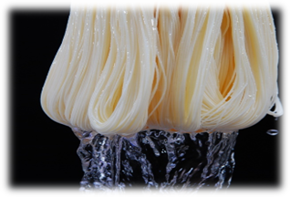
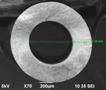
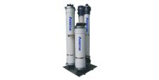
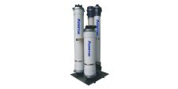
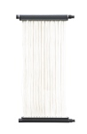
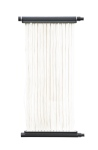

承信環境公司
水處理應用薄膜環境解決方案提供者
創新技術、誠信服務與永續發展
關於我們
我們致力於提供全面的水處理環境工程解決方案，並代理自新加坡美能材料科技有限公司（Memstar Technology Ltd.）[1]。美能材料科技有限公司是一家在新加坡證券交易所主板掛牌的高科技企業，專注於中空纖維膜及其應用產品的研發、生產與製造，並獲得新加坡經濟發展局（EDB）的支持[1]。美能已成為全球少數具備高效中空纖維膜製造能力的企業之一[1]。
主要項目服務
製造能力
- 主項目說明： 同時掌握 NIPS 與 TIPS 製膜技術 [1]
- 瞭解更多： 美能同時掌握 NIPS 與 TIPS 製膜技術，擁有嚴謹的生產管理體系與經驗豐富的管理團隊，先進的中空纖維膜及膜組件生產線，具備年產 500 萬平方米聚偏二氟乙烯（PVDF）與聚醚碸（PES）材質之微濾／超濾膜的產能，並設有年產 20 萬台家用水處理設備的生產線 [1]。


技術服務
- 主項目說明： 薄膜產品的評估及使用建議 [2]
- 瞭解更多： 我們致力於提供性能卓越的超濾膜產品，並提供以下技術支援與服務[2]：
- 膜污染分析與專業清洗建議 [2]
- 膜產品的技術交流與應用培訓 [2]
- 膜污染原因診斷與解決方案建議 [2]
- 工程現場之技術指導與膜異常狀況的緊急處理建議 [2]
專案研究
- 主項目說明： 跨域水處理技術研究 [2]
- 瞭解更多： 針對工業廢水、市政汙水處理、海水淡化等進行膜分離技術開發與效能優化，提升水資源再利用效率 [2]。
我們的解決方案
我們的解決方案主要由Memstar團隊多年累積的經驗進行專案設計研究，及設備的使用評估，確保專案的執行成功率 [2]。
超濾膜（UF）
- 主項目說明： 超濾膜技術應用開發 [2]
- 更多說明： 研究超濾膜在工業與生活污水處理中之截留效率與模組化設計，提升出水品質與運行穩定性 [2]。
 


膜生物反應器（MBR）
- 主項目說明： MBR系統效能優化 [2]
- 更多說明： 針對市政與工業污水處理中的MBR運作參數與膜污染控制策略進行整合研究，強化系統持續性 [2]。
 

整合應用
- 主項目說明： UF/MBR等混合流程 [3]
- 更多說明： 結合超濾與MBR技術探討高負荷污水處理之可行性與經濟效益，實現低碳節能排放目標 [3]。
產品應用
我們提供了全球頂尖的薄膜產品進行水處理的應用 [3]。
淨水、污水及廢水處理設備
依照專案規模、需求進行薄膜使用規劃，確保短期建置及長期營運可靠性 [3]。
薄膜處理與水資源回收設備
提供薄膜(UF及MBR)設計，有效搭配其他流程設計穩定性 [3]。
海水淡化及其他水資源活用
提供專業海水淡化技術及專案應用 [3]。
聯絡我們

JHB EnviroTECH, INC. [3]
32056 13F., No65, Sec. 1 QingFeng Rd., Zhongli Disk., Taoyuan City, Taiwan [3]
32056 桃園市中壢區青峰路一段65號13樓 [3]
Tel: +886-03-287-3678 [3]
Email: Neal@jhb-envirotech.com.tw [3]